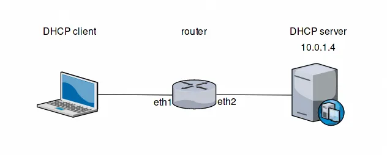
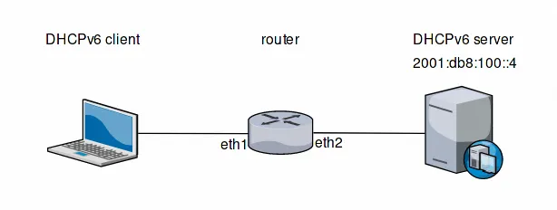

DHCP relay
A DHCP relay agent enables a single DHCP server to serve clients on remote subnets, eliminating the need for a separate server on each subnet.
The DHCP relay agent receives client requests on one interface, forwards them as unicasts to the designated server on another network, and delivers the server’s replies back to the originating clients.
VyOS provides two independent DHCP relay services:
service dhcp-relay: Relays messages between IPv4 clients and servers.service dhcpv6-relay: Relays messages between IPv6 clients and servers.
The two services are configured separately and share no settings. On a dual-stack network where clients of both address families need DHCP, configure both.
IPv4 relay
Configuration
Configure a listen interface on which the DHCPv4 relay receives client broadcast requests.
Repeat the command to configure multiple listen interfaces.
Note
At least one listen-interface and one upstream-interface must be
configured for a successful commit.
Example:
set service dhcp-relay listen-interface eth1
Configure an upstream interface through which the DHCPv4 relay forwards client requests toward the DHCP server.
Repeat the command to configure multiple upstream interfaces.
Note
At least one listen-interface and one upstream-interface must be
configured for a successful commit.
Example:
set service dhcp-relay upstream-interface eth2
Configure the IPv4 address of a DHCPv4 server to which the relay forwards client requests.
Repeat the command to forward client requests to multiple DHCPv4 servers.
Note
At least one DHCPv4 server must be configured for a successful commit.
Example:
set service dhcp-relay server 203.0.113.4
Configure an interface that participates in DHCPv4 relaying.
Interfaces configured under this legacy command operate bidirectionally, receiving DHCPv4 client broadcasts and forwarding requests to the server.
Warning
This command is deprecated and remains available only to support
existing configurations. New deployments should use
listen-interface and upstream-interface, which cannot be combined
with this command. A deprecation warning appears upon commit.
Note
The loopback interface (lo) is not accepted as a valid value for
this command.
Example:
set service dhcp-relay interface eth1
set service dhcp-relay interface eth2
Administratively disable the DHCPv4 relay service without removing its configuration.
Example:
set service dhcp-relay disable
Relay options
Configure the DHCPv4 hop count at which relayed packets are discarded.
A DHCPv4 relay that receives a client message sets the hop count to 0. Each subsequent DHCPv4 relay along the packet path increments it. Packets whose hop count has reached the specified value are silently dropped.
The default is 10.
Example:
set service dhcp-relay relay-options hop-count 4
Configure the maximum size, in bytes, that a DHCPv4 packet may reach with the Relay Agent Information option added.
If the packet with the appended option exceeds this size, the option is omitted, and the packet is forwarded without it.
The default is 576.
Example:
set service dhcp-relay relay-options max-size 1400
Configure the policy applied to incoming DHCPv4 packets that already carry a Relay Agent Information option:
append: Adds the local Relay Agent Information option while preserving the existing Relay Agent Information option.discard: Drops packets carrying a Relay Agent Information option.forward: Forwards packets with their existing Relay Agent Information option unchanged.replace: Strips the existing Relay Agent Information option and inserts the local Relay Agent Information option.
The default is forward.
Example:
set service dhcp-relay relay-options relay-agents-packets discard
Operation
Example
The following configuration forwards DHCP client requests received on
eth1 (the client-facing interface) via eth2 (the server-facing
interface) to a DHCP server at 203.0.113.4. Packets that already
contain Relay Agent Information are dropped, so that only requests
originating directly from clients are forwarded.


DHCPv4 relay topology
set interfaces ethernet eth1 address '192.0.2.1/24'
set interfaces ethernet eth2 address '198.51.100.1/24'
set service dhcp-relay listen-interface 'eth1'
set service dhcp-relay upstream-interface 'eth2'
set service dhcp-relay server '203.0.113.4'
set service dhcp-relay relay-options relay-agents-packets discard
The equivalent configuration using the deprecated interface syntax,
retained only for backward compatibility, is:
set interfaces ethernet eth1 address '192.0.2.1/24'
set interfaces ethernet eth2 address '198.51.100.1/24'
set service dhcp-relay interface 'eth1'
set service dhcp-relay interface 'eth2'
set service dhcp-relay server '203.0.113.4'
set service dhcp-relay relay-options relay-agents-packets discard
IPv6 relay
Configuration
Configure a listen interface on which the DHCPv6 relay receives client multicast requests.
The interface must already have a global unicast IPv6 address assigned.
Repeat the command to configure multiple listen interfaces.
Note
At least one listen-interface and one upstream-interface must be
configured for a successful commit.
Example:
set service dhcpv6-relay listen-interface eth1
Configure the IPv6 address the DHCPv6 relay uses to identify the client-facing network to the DHCPv6 server.
The address must be a non-link-local IPv6 address already assigned to the specified listen interface.
If the address is not set, the DHCPv6 relay uses the first non-link-local IPv6 address found on that listen interface.
Example:
set service dhcpv6-relay listen-interface eth1 address 2001:db8:1::1
Configure the IPv6 address of a DHCPv6 server (or another relay agent) to which the DHCPv6 relay forwards client messages via the specified upstream interface.
Repeat the command to forward client messages to multiple servers (or relay agents).
Note
At least one server (or relay agent) address must be configured for each upstream interface for a successful commit.
Example:
set service dhcpv6-relay upstream-interface eth2 address 2001:db8:2::4
Administratively disable the DHCPv6 relay service without removing its configuration.
Example:
set service dhcpv6-relay disable
Relay options
Configure the DHCPv6 hop count at which relayed packets are discarded.
A DHCPv6 relay that receives a client message sets the hop count to 0. Each subsequent DHCPv6 relay along the packet path increments it. Packets whose hop count has reached the specified value are silently dropped.
The default is 10.
Example:
set service dhcpv6-relay max-hop-count 4
Enable insertion of the Interface-ID option into every Relay-forward message.
The Interface-ID option is inserted automatically whenever more than one listen interface is configured on a relay, regardless of this setting.
Example:
set service dhcpv6-relay use-interface-id-option
Operation
Example
The following configuration forwards DHCPv6 client requests received
on eth1 (the client-facing interface) via eth2 (the server-facing
interface) to a DHCPv6 server at 2001:db8:2::4.


DHCPv6 relay topology
set interfaces ethernet eth1 address '2001:db8:1::1/64'
set interfaces ethernet eth2 address '2001:db8:2::1/64'
set service dhcpv6-relay listen-interface 'eth1'
set service dhcpv6-relay upstream-interface 'eth2' address '2001:db8:2::4'